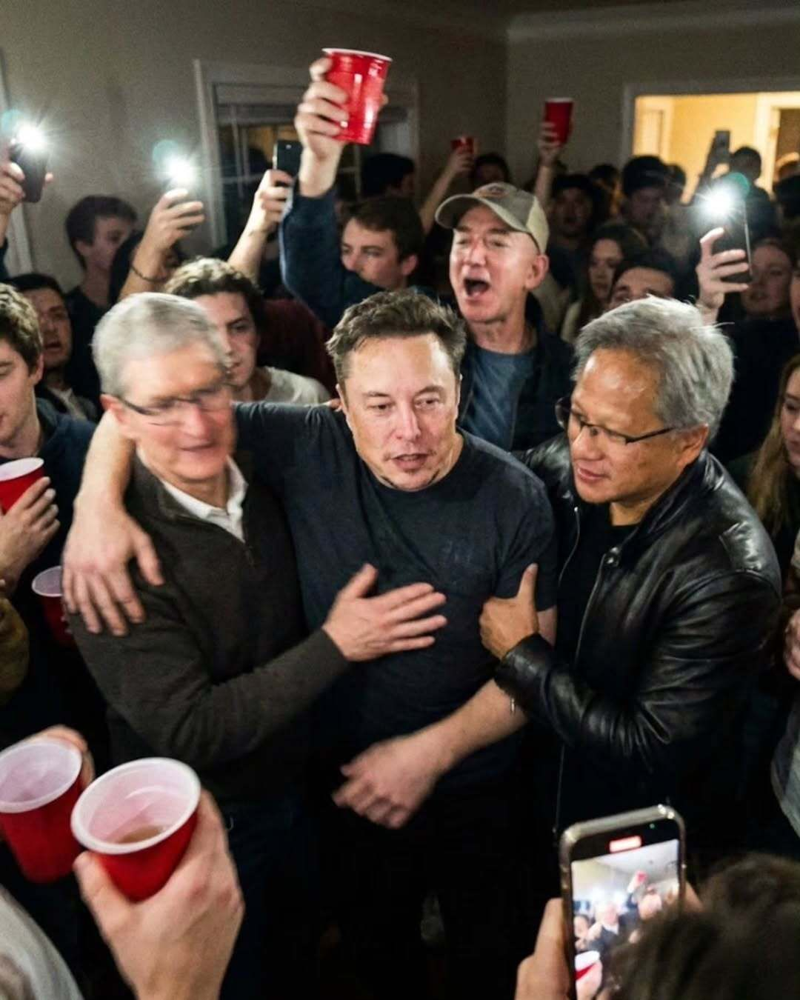
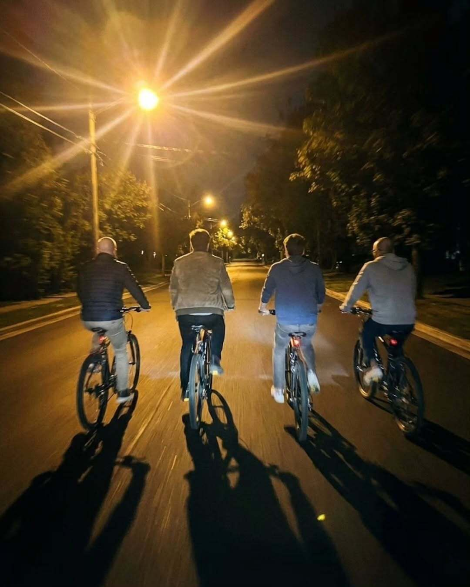
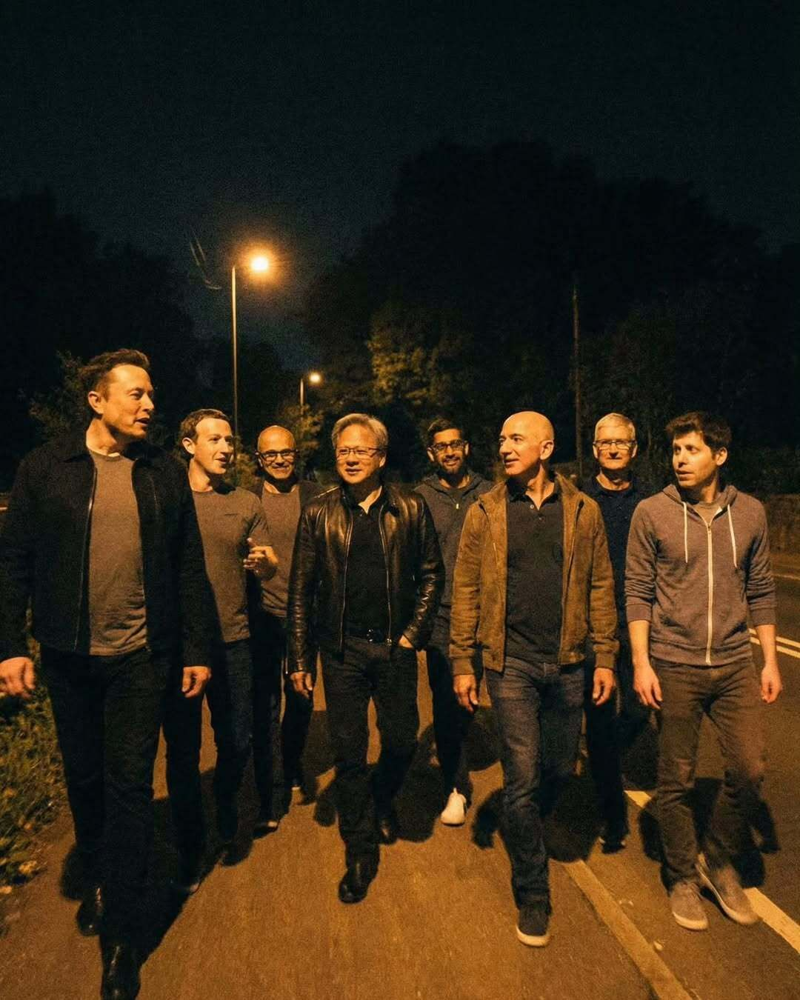

עד כמה ננו בננה 2 שמבוסס על ג׳מיני 3 החדש של גוגל מוצלח ולוקח אותנו עוד צעד לתוך טשטוש הגבולות בין תמונה מציאותית ותמונה מג׳ונרטת?
פורסם במקור ב LinkedIn
עד כמה ננו בננה 2 שמבוסס על ג׳מיני 3 החדש של גוגל מוצלח ולוקח אותנו עוד צעד לתוך טשטוש הגבולות בין תמונה מציאותית ותמונה מג׳ונרטת? תשפטו אתם:
נכנסנו לעידן שבו אפשר ליצור הכל ואי אפשר להאמין לכלום


